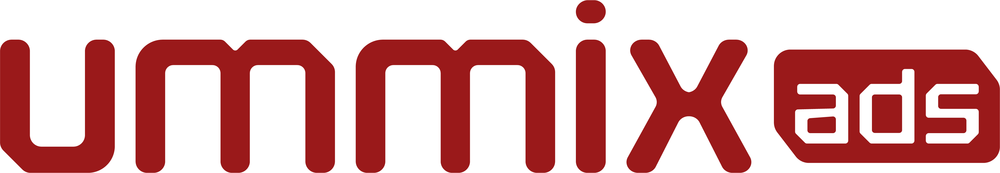

PRIMARY · brand red on off-white · 56px
32px · header lockup
20px · minimum
KNOCKOUT · white on grafite
REVERSED · white on brand red
MONO · solid grafite
Uso — o arquivo canônico é assets/logo_ummix_red.png. Em fundos escuros, aplique o filtro CSS filter: brightness(0) invert(1) para knockout em branco. Mantenha o logo em sua forma original; não recrie a marca em CSS.
Clear space — reserve ao redor do logo uma margem igual à altura do bloco ads.
Tamanho mínimo — 20px de altura em tela, 14mm em impressão.